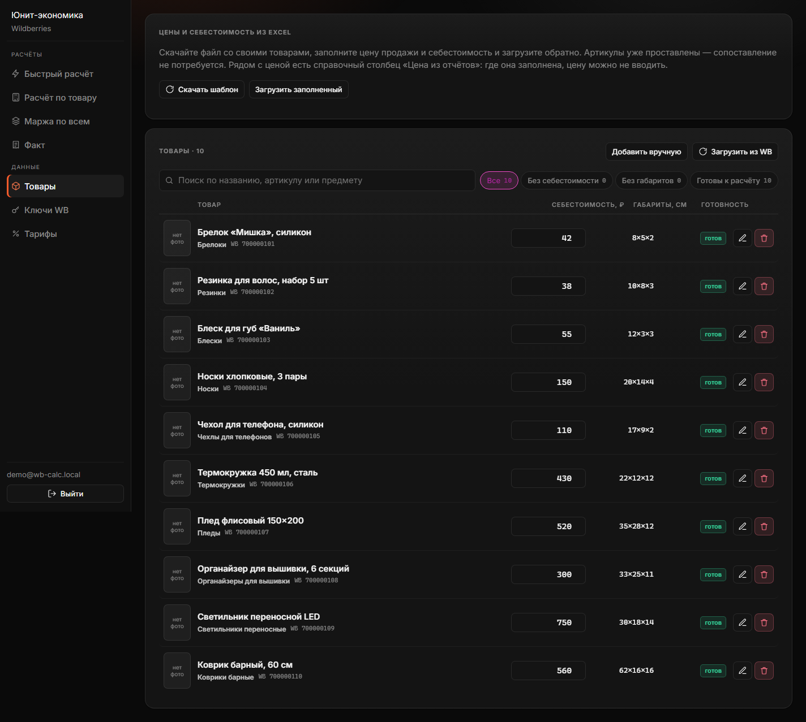
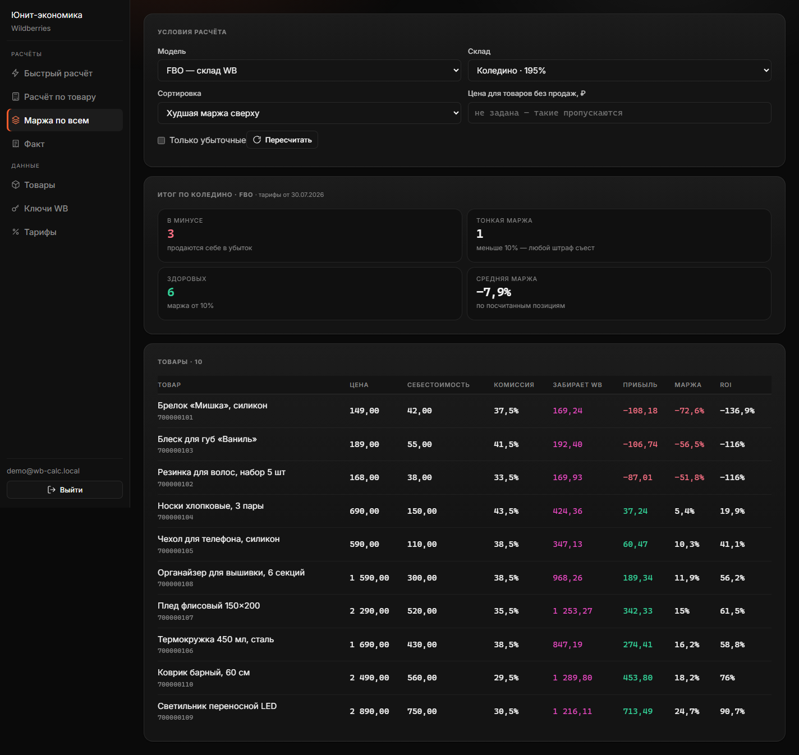

Кейс · собственный продукт
Калькулятор юнит-экономики Wildberries
Продавец видит в кабинете Wildberries выручку, а не прибыль. Сервис считает, сколько на самом деле остаётся с каждого товара — и делает это сразу по всему каталогу, а не по одной позиции.
- 679позиций в каталоге, на котором всё проверялось
- 4запроса к базе на весь каталог, сколько бы в нём ни было товаров
- 341 мсна запись 838 значений себестоимости
- 21 / 21автопроверок импорта проходят на живых данных
Задача
Wildberries удерживает с продажи комиссию категории, логистику, хранение, приёмку, возвраты, эквайринг, штрафы — каждое своей формулой и своей строкой в отчёте. Логистика зависит от объёма упаковки и коэффициента конкретного склада, а он гуляет от 75 % до 445 %. Свести это в одну цифру в Excel можно, но каждый раз заново и с ошибками.
Свести один товар — полдня. Свести шестьсот — не сделает никто. Поэтому продавцы обычно не знают, какие позиции их кормят, а какие проедают.
Что оказалось настоящей проблемой
Считать маржу я научился быстро. Дальше выяснилось, что считать нечего: у 383 позиций из 679 вообще не было цены, а себестоимость стояла у одной. Формулы были готовы, а данных под них не существовало.
Это и определило остальную работу. Красивый расчёт по одному товару бесполезен, если продавец не может за разумное время внести данные по всему ассортименту.
Массовый ввод через Excel — в два конца
Продавец скачивает файл со своими артикулами, заполняет столбцы и загружает обратно. Сопоставление при таком порядке просто не возникает — артикулы в файле уже правильные.
Между загрузкой и записью обязательный предпросмотр: что именно изменится и на что. Импорт переписывает данные по всему каталогу, и сдвинутый на одну колонку файл испортил бы расчёты по сотням позиций молча. Отдельно ловятся типовые беды живых таблиц: «1 200,50 ₽» с неразрывным пробелом читается как число, пустая ячейка означает «пропустить», а не «обнулить», а цена 1500, попавшая в графу «Выкуп, %», отклоняется как неправдоподобная.

Расчёт по всему каталогу за четыре запроса
Наивное решение — цикл по товарам — дало бы 1358 обращений к базе на 679 позиций и минуты ожидания. Вместо этого комиссии тянутся одним запросом по уникальным предметам, тарифы склада — один раз, цены — одной выборкой из отчётов о реализации. Четыре запроса независимо от того, сто товаров или десять тысяч.

Что нашлось в цифрах
После первого заполнения данных посчиталось 185 позиций: 78 в минусе, 26 на тонкой марже, 81 здоровых. Но интереснее оказался не счёт, а закономерность.
| Позиция каталога | ₽ |
|---|---|
| Цена продажи | 108,00 |
| Себестоимость | 50,00 |
| Комиссия, логистика, хранение, возвраты | 164,00 |
| Убыток с продажи | −106,00 |
Себестоимость здесь — только 50 ₽ из 106 ₽ убытка. Значит даже при нулевой себестоимости товар терял бы 56 ₽ с каждой продажи. Дешёвая мелочёвка на FBO не отбивает доставку, чем бы её ни наполнили.
Это вывод, который нельзя получить из отчёта Wildberries и который меняет решение: тут спор не про закупочные цены, а про то, что таким позициям не место в ассортименте — или их надо собирать в наборы, или поднимать цену.
Как проверялось
Сервис работает с деньгами, поэтому проверки писались не после, а вместе с кодом — и прогонялись на живом каталоге, а не на трёх выдуманных товарах:
- 21 сценарий импорта: разбор грязных чисел, отклонение сдвинутых столбцов и мусора, отсутствие записи до подтверждения, приоритет источников цены в обе стороны;
- 24 сценария админ-панели: блокировка пользователя действует немедленно, чужие данные недоступны, роль проверяется на каждом запросе;
- резервное копирование проверено обратной операцией — восстановление прогоняется в транзакции и откатывается, чтобы убедиться, что копия читается.
Отдельный класс ошибок вылез только на объёме: первая версия импорта обновляла товары по одному и падала на 679 позициях по таймауту транзакции через 7,5 секунды. Переписал на один запрос на поле вместо запроса на товар — те же 838 изменений стали применяться за 341 мс.
Стек
Развёрнут и работает. Тарифы Wildberries обновляются по расписанию, API-ключи продавца шифруются AES-256-GCM, есть админ-панель, оферта и политика обработки данных.
Нужен такой же расчёт под ваш магазин?
Юнит-экономика считается по одним и тем же правилам, но у каждого продавца свои склады, категории и способ вести себестоимость. Напишите — посчитаю ваш ассортимент и скажу, что имеет смысл доработать. Разбор бесплатный.